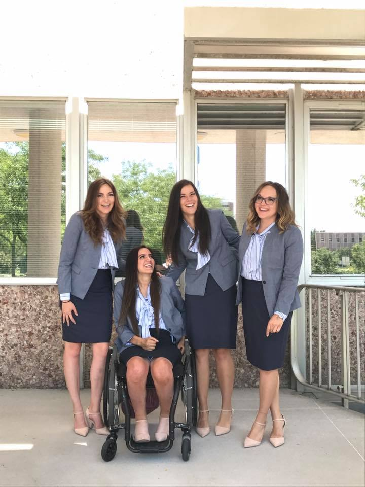

Katelyn Strobel
Menu
Home
About
Resume
Tableau
Katelyn Strobel Resume
View my experience and qualifications.

Katelyn Strobel
Work Experience
Student Body Vice President - Brigham Young University
2017 - Present. Provo, UT
Increased student service events’ reach from 30% to 97% of students using specific campus-wide demographic targeting
Managed $300,000 budget to support 350+ student activities, clubs, and councils across 33,000 student campus
Oversaw 100+ volunteers during election campaign, resulting in biggest winning margins in recent history (55% of total vote)
Used social media marketing campaign to generate record breaking student engagement with 218K social media impressions
Startup Cofounder and CEO – AllyWatch
2017 - Present. Provo, UT
Machine learning startup company which provides emergency response for in-home elderly
Won competitive seat as a Crocker Innovation Fellow (12% acceptance rate), securing access to $50,000 cash funding
Managed development team to create biomonitoring Apple Watch and iPhone application in under 6 months
Awarded Miller Business Model Competition 3rd Place, Social Venture Academy Best Idea, Opportunity Quest 3rd place
Digital Marketing Specialist – Canopy
2018 - Present. Lehi, UT
Advanced work with B2B Google AdWords, LinkedIn, Facebook Advertising; A/B testing conversion increased by 116%
Lead Company’s Product Persona Data analysis, A/B Testing Platform, and Business Analytics Stack
Lead Business Data Analyst Intern – Benetech
2016. Lehi, UT
Used Microsoft Access to migrate 600+ marketing spreadsheets into a single SQL database reducing analysis time by 40%
Conducted 50+ usability studies to analyze customer onboarding experience, improving SEO exposure and conversion by 10%
Education
Brigham Young University – Marriott School of Business
Honors Bachelor of Science in Business Management. Provo, UT
GPA 3.72/4.00
Minor in Communications
Skills, Interests, & Service
Proficient in Microsoft Excel, Microsoft Access, Adobe Photoshop, Adobe Lightroom, and Final Cut Pro, SQL, HTML, C++
Raised $15,000 for college scholarship assistance for underprivileged women; presented curriculum to over 10,000 students
Undergraduate Honors Program Thesis work studying the scientific method in startup processes
Miss Idaho Runner-up, Overall Talent and Interview Winner, awarded $20,000 in scholarship